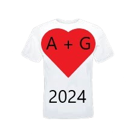

Feliz año nuevo a la persona más especial e increíble del universo entero que está aquí a mi lado todos los días y existe para darme la inmensa alegría de vivir en su corazón y en sus brazos donde en cada momento amo cerrar los ojos como un niño y sentirse seguro lejos de todo daño. Un agradecimiento inmenso con el que llenaría una hoja entera de papel por todas las cosas extraordinarias que has hecho y seguirás haciendo por mí, gracias por darme felicidad y amor que hacen latir mi corazón en lo más profundo y me hacen tocar el Cielo lleno de energía listo para afrontar cada desafío que la vida nos ponga por delante, gracias a cada beso y abrazo que como oxígeno me hacen vivir aquí para ti en cuerpo y alma para protegerte con mi amor, mientras nuestras almas se unen para ser juntas una sola persona. capaz de vencer y superar todos los obstáculos. ¡Gracias por dejarme escuchar el precioso latido de tu dulce corazón que mantiene vivo al ángel más dulce y sabio de todo el universo! Gracias cada momento de estar aquí a mi lado enseñándome la sencillez de amarte mientras admiro tu dulce sonrisa que cada día me deja sin palabras, ¡somos más fuertes que un huracán capaz de enfrentar y superar todo juntos! en este 2023 enfrentamos juntos retos increíbles de los cuales con nuestra fuerza y determinación salimos victoriosos como por la universidad en la que pusiste tu corazón y admiro como con tu fuerza y pasión lograste aprobar examen tras examen y estoy orgulloso de a ti por cada evaluación de cada examen que obtuviste con determinación y que te merecías y lo mejor es haber compartido esa victoria juntos y haber celebrado compartiendo el momento juntos! Me encanta cómo logras hacer cosas extraordinarias y cómo siempre logras poner todo lo tuyo para hacer que incluso un simple gesto sea único e increíble y gracias por darme la oportunidad de estar aquí para animarte y animarte a que nunca para y no tienes por qué sentirte nunca en dificultad porque eres el número uno en todo el universo y admiro cómo sabes levantarte sin rendirte jamás, comenzando de nuevo con una fuerza increíble más que un huracán o un terremoto que viene de tu corazón, logrando terminar todo y si te sientes en dificultad, cierra los ojos, estoy aquí a tu lado y en el fondo de tu corazón para hacerte levantar y darte toda mi energía cada día mientras te sostengo. fuertemente a mí y protegerte con mi abrazo envolvente y lleno de besos. Gracias por permanecer a mi lado en momentos difíciles durante la pérdida de mi abuelo y con tu amor y cariño pudiste borrar el dolor y me diste la fuerza para afrontar ese momento juntos y gracias por hacerme redescubrir la magia de la Navidad. y gracias a ti, después de 4 años fue maravilloso hacer juntos el árbol de Navidad y decorarlo juntos! Me encanta guardar cada momento de alegría en nuestros corazones, como la Navidad que este año pasamos por primera vez a la orilla del mar o en particular hoy donde juntos saludamos el año con nuestro número especial 2023 e inauguramos este 2024 y Te deseo mi amor desde este nuevo punto de partida de que tengas un extraordinario año nuevo lleno de paz y hermosas sorpresas y con la camiseta que hemos elegido un año de salud para nosotros y para nuestra preciosa familia, porque cada día te lo mereces única y exclusivamente. ¡Todas las cosas hermosas y extraordinarias que la vida puede ofrecer y me encanta estar aquí para compartir esto contigo que eres mi compañero de vida! ¡Te amo inmensamente desde el fondo de mi corazón que late sólo por ti y que acoge en cada momento tu preciosa alma para protegerla de todo mal! Te amo infinitamente desde el fondo de mi mente donde cada día eres el sueño más hermoso que quiero tener por el resto de mi vida sin volver a abrir los ojos! Te amo ilimitadamente, alma, cuerpo y todo mi ser, tú que eres mi ADN, mi oxígeno, mi vida, mi universo, mi corazón, mi estrella que ilumina mi camino y me guía hacia tu corazón, protegiéndome desde lejos de todo. mal, cada célula y molécula de mi cuerpo y sustancia de mi alma que cada día me da vida para protegerte aquí en mis brazos lejos de todo mal, ¡mi todo! ¡Feliz año nuevo 2024 amor de mi vida! Que Dios bendiga nuestra relación y que este año sea otro año increíble juntos y gracias por cada momento y cosa especial que has hecho por mí, gracias por hacerme feliz todos los días aquí a tu lado y en tus brazos, gracias por existir. ¡Me ayudará en la vida! A+G+GIOAN = familia hoy, por siempre y más allá!